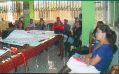

Plan Estratégico
Cooperativa Agraria Productores de Tara.
El presente estudio, constituye la herramienta de gestión que dirigirá la marcha institucional de la Cooperativa APT del Norte por los siguientes cinco años; con la finalidad de contribuir a que la Cooperativa sea más competitiva, supere sus problemas y se acerque más a a sus objetivos institucionales. Descargar
Impacto generado con el Plan Estratégico
| SOCIOS | Indicador | |
|---|---|---|
| Se crece de 20% a 50% en número de socios que accede a riego tecnificado | Número de socios | |
| Se aumenta la productividad de 3,5 kb por árbol a 7 kb por árbol | Productividad | |
| Crece el compromiso del socio de 50% a 80% | Aportes, asistencia a reuniones | |
| Mejora el ingreso económico del socio en un 50% como resultado de la mejora en productividad | Soles, ingreso de los socios. | |
| 50 hectáreas reforestadas con tara | Número de hectáreas reforestadas con tara | |
| Se crece de 125 las has certificadas como organiza hasta 450 has certificadas | Número de hectáreas con certificación orgánica | |
| PROCESOS | ||
|  | Se crece de 5 aliados a 10 en 5 años | Mejora en la política salarial en función al cumplimiento de metas |
| Número de aliados | Mejora salarial | |
| MERCADO | ||
| Se crece en un 5% el acopio para venta como tara en vaina | Toneladas de tara acopiada | |
| 1800 tn de tara en polvo y 500 de tara en goma | Toneladas de tara en polvo y de tara en goma vendida | |
| Se crece de 59% el % tanino a 63% | % de caninos en la tara | |
| FINANCIERO | ||
| Al quinto año se cuenta con un capital de trabajo de 1.5 millones de USD | Soles de capital de trabajo | |
| Se mejora la utilidad operativa de 0.87% a hasta un mínimo de 8% | % de utilidad operativa |
Valores Institucionales
Respeto
Compromiso
Amor al trabajo
Equidad
Democracia
Transparencia
Objetivos Estratégicos
| Objetivo Estratégico | Indicador | |
|---|---|---|
| Objetivo Estratégico 1 | Ser líder en la producción de tara | |
| Objetivo Estratégico 2 | Mejorar condiciones económicas, sociales y ambientales | |
| Objetivo Estratégico 3 | Proteger y conservar el Medio ambiente. | |
| Objetivo Estratégico 4 | Desarrollar una Gestión eficiente e innovadora | |
| Objetivo Estratégico 5 | Ser Líder en acopio, transformación y exportación de tara en polvo y en goma | |
| Objetivo Estratégico 6 | Ser reconocidos a nivel nacional e internacional por la calidad de su producto | |
| Objetivo Estratégico 7 | Contar con solidez económica |